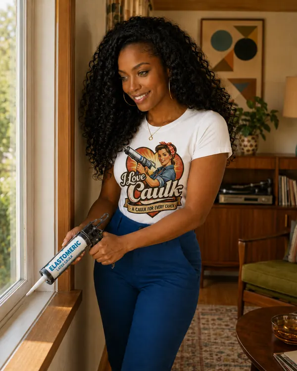

Exterior trim to siding
Sun, rain, and constant movement. Use an exterior-rated, paintable sealant with a real movement rating.
Our pick: OSI Quad Max (Amazon), DAP Dynaflex Ultra (Amazon), Soudal Fix ALL
Caulk by room
Let it all hang out… then seal it up
A drafty window is basically just a polite hole in your wall. Window and door caulk needs to bond to multiple substrates (wood, aluminum, vinyl, brick), flex with temperature swings, and hold up for years without cracking. Polyurethane and elastomeric formulations are the go-tos for exterior applications; paintable acrylic for interior finishing.

Every joint in the room, what goes in it, and why. The color bar matches the formulation.
Sun, rain, and constant movement. Use an exterior-rated, paintable sealant with a real movement rating.
Our pick: OSI Quad Max (Amazon), DAP Dynaflex Ultra (Amazon), Soudal Fix ALL
Masonry is rough and porous and the joint is often wide. Polyurethane or hybrid grips it; use backer rod when the gap is over 1/4 inch.
Our pick: Sikaflex-1a (Amazon), Soudal Fix ALL
Stops the draft you feel around the trim and cleans up the paint line.
Our pick: DAP Alex Plus (Amazon)
Seal where the sill meets the jambs and the floor, keeping water from wicking under the door.
Our pick: GE Silicone 2 Kitchen & Bath (Amazon), Sikaflex-1a (Amazon)
Old wood sash takes glazing putty, not caulk. Clear silicone is fine on metal and vinyl stops.
Our pick: Sashco Lexel, Gorilla 100% Silicone (Amazon)
The little slots at the bottom of vinyl and aluminum frames let water out. They are supposed to be open.
Never caulk weep holes.
Tubes worth a place in your cart for this room, and the joint each one suits. Price runs from $ (budget) to $$$ (pro grade).
| Product | Type | Best for | Why | Price | Buy |
|---|---|---|---|---|---|
| DAP Dynaflex 230 | Elastomeric latex | Window and door trim | Very flexible, resists cracking | $–$$ | Check price on Amazon |
| GE Supreme Silicone Window & Door | 100% silicone | Exterior window frames | UV-resistant, bonds to vinyl | $–$$ | Check price on Amazon |
| Loctite PL Window, Door & Siding Sealant | Polyurethane | Exterior masonry gaps | Paintable, bonds to brick and stucco | $–$$ | Check price on Amazon |
| DAPtex Plus Foam Sealant | Expanding foam | Rough openings and headers | Fills large gaps around frames | $ | Check price on Amazon |
| Great Stuff Window & Door Insulating Foam | Expanding foam | Around window flanges | Minimal expansion, won't bow frames | $ | Check price on Amazon |
| Tremco Spectrem 1 Silicone | 100% silicone | Storefront glazing | Commercial grade, long service life | $$$ | Maker's page |
| GE Advanced Silicone 2 Window & Door | 100% silicone | Metal flashing and trim | UV-resistant, 40-year durability claim | $–$$ | Check price on Amazon |
| OSI Quad Max Window, Door & Siding | Exterior sealant | Lap siding and J-channel | Strong adhesion, paintable | $$ | Check price on Amazon |
| DAP Extreme Stretch | Elastomeric latex | Windows, doors, siding, trim | Very high stretch, gaps up to 3", ASTM C920 Class 25 | $ | Check price on Amazon |
Amazon links are affiliate links: if you buy through one, we may earn a small commission at no extra cost to you. It never decides what we recommend.
On a windy day, move a strip of tissue or a stick of incense slowly around the trim. Where it flutters, air is moving.
Anything cracked, hard, or pulling away comes out. New caulk on old caulk fails with it.
Brush out dirt and cobwebs; wipe vinyl and metal with alcohol. Bare wood should be primed.
Over about 1/4 inch wide or deep, press in foam backer rod first so the bead is the right depth.
Work on a mild, dry day within the temperature range on the tube. Tool the bead into the joint.
Most exterior sealants take paint once they've skinned or cured; the tube gives the window.
Both, for different reasons. Outside keeps water out of the wall; inside stops air leaks you can feel.
A removable putty cord you press into gaps for the winter and peel out in spring. Great for renters and windows that open.
Yes, with a sealant that lists vinyl as a substrate. Hybrids and many advanced latex sealants do; wipe the vinyl with alcohol first.
More answers in the full FAQ, or let the Caulk Finder pick for you.